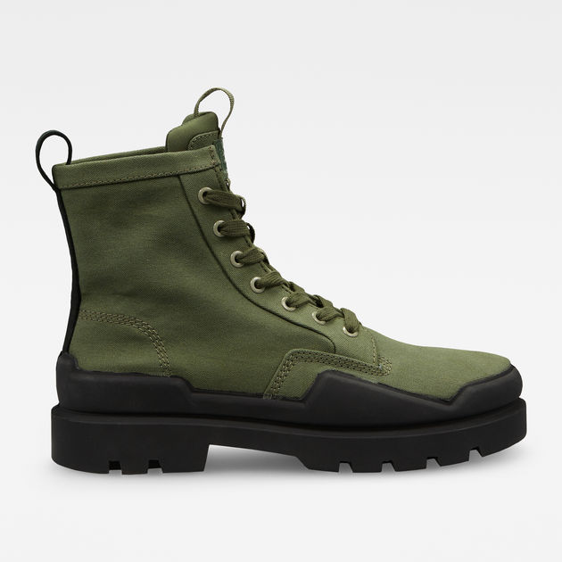
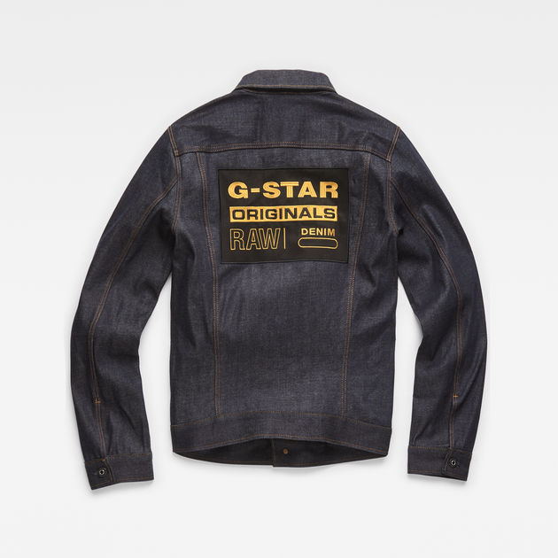

G-STAR
G-Star RAW is a Dutch designer clothing company, founded by Jos van Tilburg in Amsterdam in 1989, which produces high quality clothing. Models for the brand include Liv Tyler, Mathias Ranegie, Girls' Generation, World Chess Champion Magnus Carlsen, Clémence Poésy and musician Sergio Pizzorno.a yellow star characterized primarily by a surface temperature of around 5,500 kelvins. Note: Our Sun is classified as a G star.George Gstar also known by his stage name “GStar” on MTV has managed to accumulate a net worth estimated to be around $180 million, thats too before the age of 30.
 